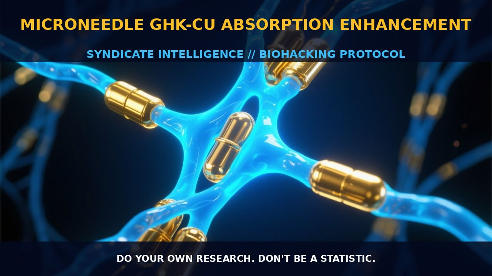

Enhancing GHK-Cu Absorption with Microneedles

The Mechanism
The mechanism of microneedle-mediated delivery of GHK-Cu involves the creation of microconduits in the skin's stratum corneum, the outermost layer of the epidermis. These microchannels allow for the enhanced penetration of GHK-Cu, a copper-bound peptide with potent regenerative properties.
The depth and percentage of microneedle penetration are influenced by the applied force, leading to an increase in the permeability of the skin to GHK-Cu. In the study, the application of microneedles resulted in the permeation of 134 ± 12 nanomoles of GHK-Cu in 9 hours, while almost no peptide permeated through intact skin. Histological and confocal laser scanning microscopy assays confirmed the creation of these microchannels, providing a clearer understanding of the pathway through which GHK-Cu enters the skin.
The microneedle pretreatment increases the skin's permeability, facilitating the absorption of this peptide and its copper complex, which plays a crucial role in skin regeneration and wound healing. The hydrophilic nature of GHK-Cu is a significant barrier to its absorption through the skin. However, the microneedle array creates temporary pathways that bypass this barrier, allowing the peptide to more effectively penetrate the skin. This method not only enhances the permeability but also ensures that the peptide reaches the dermis, where it can exert its regenerative effects.
The microchannels created by the microneedles are relatively small and do not cause significant damage to the skin, thereby minimizing irritation and ensuring the safety of the delivery method. The effectiveness of this technique is further supported by the absence of any obvious signs of skin irritation after microneedle treatment with GHK-Cu.
The Biological Leverage
GHK-Cu exerts its biological effects through a variety of mechanisms, including the stimulation of collagen synthesis and the modulation of metalloproteinases and their inhibitors. The peptide has a high affinity for copper, forming a stable complex that enhances its biological activity. GHK-Cu promotes the synthesis of collagen, glycosaminoglycans, and proteoglycans, which are essential for maintaining the structural integrity and elasticity of the skin.
Additionally, it modulates the activity of metalloproteinases, which are enzymes that break down the extracellular matrix, thereby supporting the repair and regeneration of skin tissue. Furthermore, GHK-Cu plays a pivotal role in attracting immune and endothelial cells to the site of injury, accelerating the wound-healing process. The peptide also exhibits anti-inflammatory properties, reducing the inflammatory response and promoting tissue repair. This multifaceted action of GHK-Cu makes it a promising candidate for enhancing skin regeneration and wound healing.
The peptide's ability to stimulate collagen synthesis and modulate the activity of metalloproteinases is particularly relevant for its anti-wrinkle effects, as these processes contribute to the maintenance of skin elasticity and firmness. The permeation enhancement provided by microneedles ensures that GHK-Cu can reach the dermal layers where it can exert its full biological potential.
Tactical Implementation
To effectively implement microneedle-mediated GHK-Cu absorption, it is crucial to understand the dosing and timing parameters. The research indicates that microneedle pretreatment enhances the permeation of GHK-Cu, with a significant amount of the peptide and copper being absorbed within 9 hours. However, the exact dosage of GHK-Cu required for optimal absorption is not well established in the provided context.
In practice, biohackers may experiment with low-to-moderate amounts of GHK-Cu to observe the effects and adjust the dosage accordingly. Microneedle application should be performed gently to avoid irritation and ensure the creation of effective microchannels for peptide permeation. Stacking GHK-Cu with other compounds such as curcumin, which has anti-inflammatory and antioxidant properties, may further enhance its regenerative effects. Curcumin can support the anti-inflammatory actions of GHK-Cu, thereby promoting a more favorable environment for tissue repair.
Additionally, incorporating probiotics to support a healthy microbiome can complement the benefits of GHK-Cu by enhancing overall immune function and reducing inflammation. Biohackers should monitor their individual reactions and adjust the protocol as needed, ensuring a balanced and effective approach to skin regeneration and wound healing.
Prostar Life Hack
Apply microneedles to enhance the absorption of GHK-Cu, a peptide with potent regenerative properties. Ensure gentle application to avoid irritation and maximize the creation of microchannels for optimal peptide permeation.
[ AUTHOR: LEAD TECHNICAL RESEARCHER ]